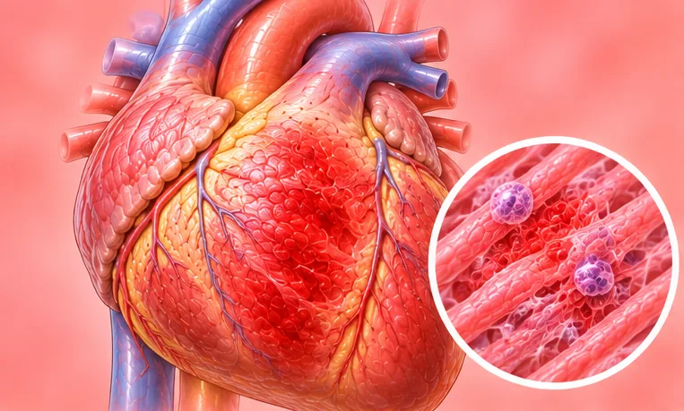
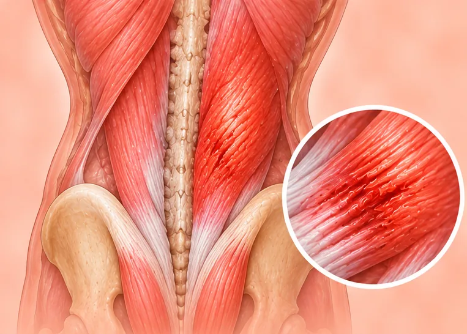

Autoimun & reumatik
27 keadaan dan gejala

Arteritis Takayasu (radang arteri besar) Artritis psoriatik
Artritis psoriatik- Artritis reaktif
- Artritis reumatik
- Artritis reumatoid
- Demam reumatik
 Fibromialgia
Fibromialgia- Lupus (lupus eritematosus)
- Lupus (SLE)
- Lupus eritematosus diskoid
- Nefritis lupus (radang buah pinggang)
- Penyakit Behcet
- Penyakit Still
- Penyakit Still permulaan dewasa
- Penyakit tisu penghubung
- Penyakit tisu penghubung campuran (MCTD)
- Penyakit tisu penghubung tidak terbeza (UCTD)
- Polimialgia reumatika
- Polimiositis (radang otot)
- Reumatisme (penyakit reumatik)
- Sindrom antifosfolipid (APS)
- Sindrom Sjögren
- Skleroderma (kulit mengeras)

Spondilitis (radang tulang belakang)- Spondilitis ankilosis
- Vaskulitis
- Vaskulitis berkaitan ANCA